▲ 내성천이 세 면을 감싸는 물돌이 마을 무섬. 올해 축제는 마을 전체가 무대다 사진=한국관광공사
경북 영주의 10월 첫 주말은 하루에 두 곳을 묶어 갈 수 있는 드문 때다. 무섬외나무다리축제(문수면 무섬마을, 10월 3~4일)와 풍기인삼축제(풍기읍 남원천·풍기인삼공원 일원, 10월 3일 개막)가 같은 날 문을 연다. 한 가지 먼저 바로잡을 점이 있다. 풍기인삼축제를 "10월 3~5일"로 알고 있는 경우가 있지만, 보도된 공식 기간은 10월 3일부터 11일까지 9일간이다. 3~5일은 KTX-이음이 풍기역에 임시 정차하는 기간과 겹치는 구간이다. 이 글은 두 축제를 자가용으로 오가는 방문객 기준으로 주차와 이동 동선을 정리했다. 모든 정보는 개막 직전 보도와 공식 누리집을 근거로 했고, 확인하지 못한 항목은 따로 표시했다.
1. 한눈에 보기 — 두 축제, 일정부터 정리
▲ 내성천이 세 면을 감싸는 물돌이 마을 무섬. 마을 앞 모래밭 위로 외나무다리가 놓인다. 사진=한국관광공사
두 축제는 성격이 다르다. 무섬은 이틀짜리 마을 단위 행사이고, 풍기는 9일간 도심 하천변에서 열리는 먹거리·판매 중심 축제다. 같은 날 개막하므로 개막일인 3일 오전에는 한쪽, 오후에는 다른 쪽을 가는 식으로 짜는 방법이 있다. 다만 어느 쪽도 시간대별 혼잡 정도를 공식적으로 밝히지 않았다.
| 구분 | 무섬외나무다리축제 | 풍기인삼축제 |
|---|---|---|
| 기간 | 10월 3일(토)~4일(일), 2일간 | 10월 3일(토)~11일(일), 9일간 |
| 장소 | 영주시 문수면 무섬마을 일원 | 영주시 풍기읍 남원천·풍기인삼공원 일원 |
| 주제·슬로건 | "무섬, 시간을 건너 사람을 잇다" | "기운 없으면 풍기로 와" |
| 주최·문의 | 영주문화관광재단, 054-630-8725 | 영주문화관광재단, 054-630-8706 |
| 운영 시간 | 10:00~18:00(보도 기준) | 10:00~20:00(보도 기준) |
| 입장료 | 확인하지 못함(공식 누리집에 요금 안내 없음) | 관람 무료, 일부 체험 유료(보도 기준) |
| 주소(재단 누리집) | 문수면 탄산리 605-1 | 풍기읍 성내리 240-1 |
| 성격 | 전통혼례·상여행렬 재현, 고택 체험 | 인삼 판매, 인삼 요리, 체험, 가요 공연 |
| 공식 누리집 | yctf.or.kr/museom | yctf.or.kr/punggiginseng |
ℹ️ "풍기 10월 3~5일"은 일부만 맞는 말이다
풍기인삼축제 전체 기간은 10월 3일~11일(9일간)이다. 3~5일, 9~11일에 KTX-이음이 풍기역에 임시 정차하고, 10일에는 소백산 영주풍기인삼 가요제와 태진아 공연, 11일에는 폐막 공연이 있다. 이 글은 무섬과 일정이 겹치는 3~4일 방문에 맞춰 썼다.
2. 무섬외나무다리축제 — 무엇을 하나
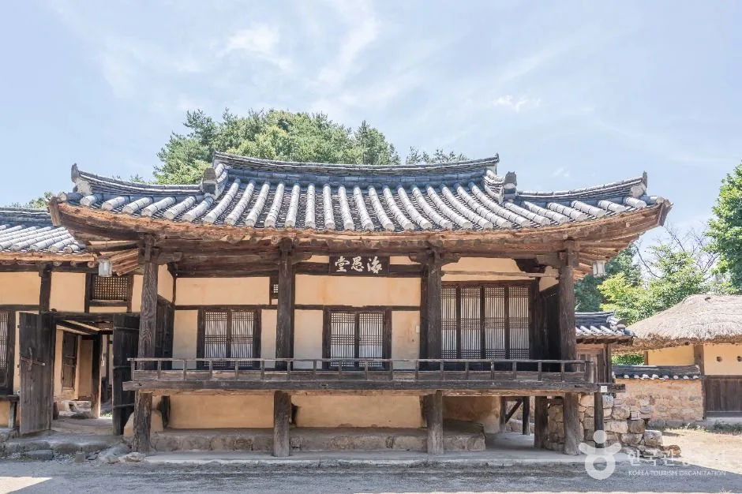
▲ 마을에는 전통 고택이 남아 있고, 이번 축제는 고택별 체험을 스탬프 투어로 엮었다. 사진=한국관광공사
보도에 따르면 올해 무섬은 "보는 축제"에서 "마을을 직접 걸으며 참여하는 축제"로 방향을 틀었다. 3일 낮 12시 30분 만죽재 농당고택 주무대에서 개막식이 열리고, 명창 배일동의 판소리와 전통 악기 연주, 김성태 작가의 대붓 서예 퍼포먼스가 이어진다. 첫날에는 오전 10시 30분부터 신랑·신부가 풍물패와 함께 외나무다리를 건너 백사장과 혼례장으로 이동하는 전통혼례 재현 "무섬연가"가 열리고, 둘째 날인 4일에는 상여행렬 재현이 예정돼 있다. 4일 상여행렬은 오후 2시부터 4시까지, 백사장과 외나무다리를 지나는 형태로 보도됐다. 프로그램 이름은 공식 누리집 공연 목록에는 "무섬별곡", 세명일보에는 "무섬별가"로 적혀 있어 정확한 명칭은 확정하지 못했다.
| 구분 | 내용 | 날짜 |
|---|---|---|
| 개막식 | 판소리, 전통 악기 연주, 대붓 서예 퍼포먼스(만죽재 농당고택 주무대) | 3일 12:30 |
| 무섬연가 | 외나무다리 위 전통혼례 재현, 풍물패와 신랑·신부 행렬 | 3일 10:30 |
| 상여행렬 | 전통 상여행렬 재현, 백사장·외나무다리 통과 | 4일 14:00~16:00(세명일보) |
| 체험 | 고택 스탬프 투어, 무섬 유람투어(5개 고택을 돌며 전통놀이), 무섬살이 한마당(윷놀이·다듬이·새끼줄 꼬기·전통음식 시식), 우물 물긷기, 겨메기(전통 어로), 편지 체험, 꽃길존 | 양일 |
| 어린이 | 모래놀이터, 샌드아트(모래그림), 힐링 밧줄놀이(짚라인·버마다리·해먹으로 소개) | 양일 |
| 먹거리·전시 | 무섬한상(전통 음식), 광목천 전시 | 양일 |
| 공연 | 무섬 경전성독, 덴동어미 화전가, 무섬 흥마당 등 | 시간표 미확인 |
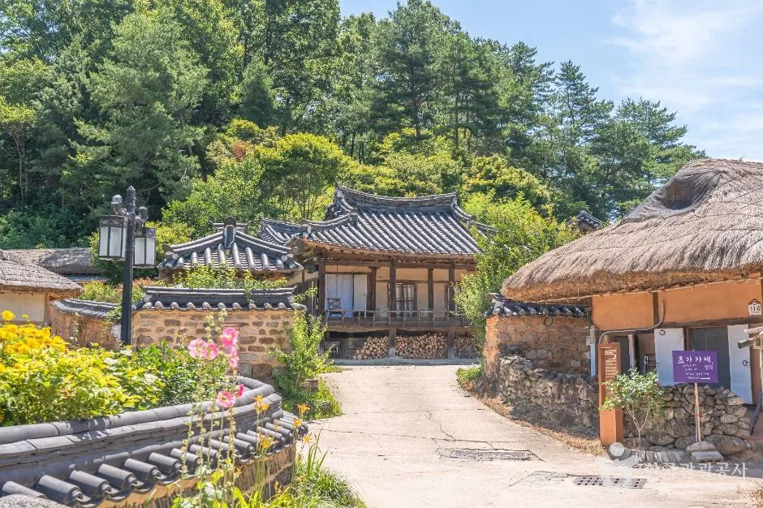
▲ 돌담 너머로 초가와 기와 고택이 이어진 무섬마을. 체험 프로그램은 이런 고택을 돌며 진행된다. 사진=한국관광공사
세부 시간표와 체험 요금은 확인하지 못했다. 문의는 영주문화관광재단(054-630-8725)이다. 공식 누리집에도 주차·셔틀·요금은 올라와 있지 않았으므로, 출발 전 영주문화관광재단에 확인하는 편이 안전하다.
공식 안내는 영주문화관광재단 누리집에서 볼 수 있다. 무섬외나무다리축제 공식 누리집 바로가기
3. 무섬마을 자차 접근 — 주차와 셔틀
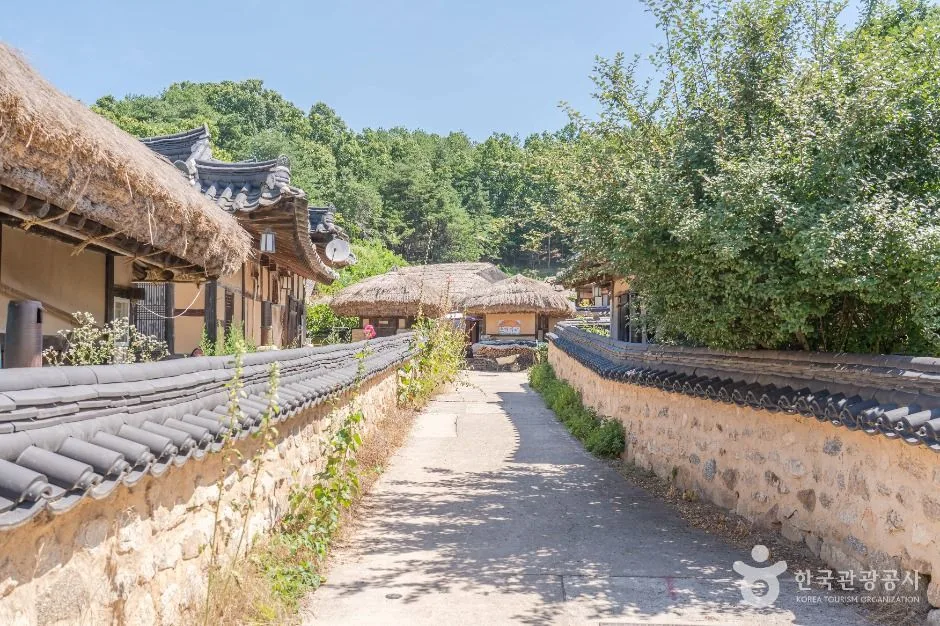
▲ 마을 안 골목은 좁다. 차는 마을 밖에 세우고 걷는 쪽이 맞다. 사진=한국관광공사
한국관광공사 여행기사는 수도교를 건너 마을로 들어서자마자 왼쪽에 주차장이 있다고 안내한다. 이번 축제와 관련해서는 보도에서 외나무다리 입구에 대형 무료 주차장이 있고 축제 기간에 제1~제4주차장이 순차적으로 운영된다는 내용, 그리고 무섬마을 입구·머림들 주차장 앞·천지인전통사상체험관·외나무다리 건너편을 잇는 순환 셔틀이 다닌다는 내용이 확인된다. 다만 각 주차장의 정확한 위치와 수용 대수, 셔틀 첫차·막차 시간은 공식 자료에서 확인하지 못했다.
| 항목 | 내용 | 확인 상태 |
|---|---|---|
| 내비 목적지 | 관광공사 도로명 주소: 영주시 문수면 무섬로234번길 31-12 | TourAPI 기준 |
| 지번 표기 | 매체는 문수면 수도리 268, 재단 누리집은 문수면 탄산리 605-1 | 출처마다 상이, 내비는 "무섬마을"로 검색 |
| 주차 | 외나무다리 입구 대형 무료주차장, 축제 기간 제1~4주차장 순차 운영 | 보도 기준, 수용 대수 미확인 |
| 셔틀 | 마을 입구·머림들 주차장 앞·천지인전통사상체험관·외나무다리 건너편 순환 | 보도 기준, 운행 시간 미확인 |
| 소요 시간(추정) | 마을 걷기와 체험을 넣으면 2~3시간 안팎 | 공식 자료 없음, 추정치 |
| 마을 내 차량 | 좁은 골목, 보행자 중심 마을 | 현장 통제 여부 미확인 |
✅ 무섬 자차 방문 요령
· 무섬연가(3일 10:30)와 개막식(3일 12:30) 시간대는 주차장이 빨리 찰 가능성이 있다. 10시 30분 이전에 도착하는 편이 낫다(혼잡 시간대는 공식 발표 없음)
· 4일에 간다면 상여행렬(14:00~16:00) 시작 전인 오후 1시 전후까지 도착하는 편이 낫다(주차 혼잡은 추정)
· 주차장이 마을에서 떨어진 경우 셔틀을 이용하고, 마지막 셔틀 시간은 현장에서 확인한다
· 외나무다리는 폭이 좁아 보행 대기 시간이 생길 수 있다
· 신발은 모래밭을 걸을 수 있는 편한 것으로 준비한다
마을 밖에 차를 세우고 걸어 들어가는 구조가 낯설다면 같은 방식인 안동 하회마을 주차·셔틀 가이드를 먼저 읽어 두면 감을 잡기 쉽다.
4. 풍기인삼축제 — 3~4일에 볼 것
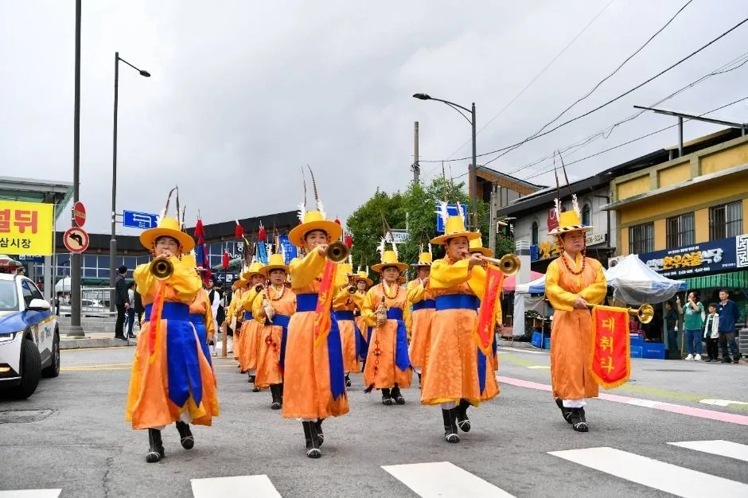
▲ 개삼 시배를 이끈 주세붕 군수의 행차를 재현한 퍼레이드가 개삼터에서 출발해 풍기역을 거쳐 축제장까지 이어진다. 사진은 과거 축제 현장이다. 사진=한국관광공사
풍기인삼축제는 풍기에서 처음 인삼 재배를 시작한 개삼터에서 올리는 고유제로 개막한다. 이어 풍기인삼 시배를 이끈 주세붕 군수의 행차를 재현한 퍼레이드가 개삼터에서 출발해 풍기역을 거쳐 축제장까지 펼쳐지고, 개막식과 장한별·성리 축하공연이 이어진다. 4일 오후 3시에는 오세득 셰프의 푸드 토크쇼 "풍기 기운 한입"이 마련됐다. 축제 기간 동안 인삼깎기 경연, 인절미 떡메치기, 족욕 체험, 덴동어미 화전놀이, 국립청년연희단 풍물공연도 열린다.
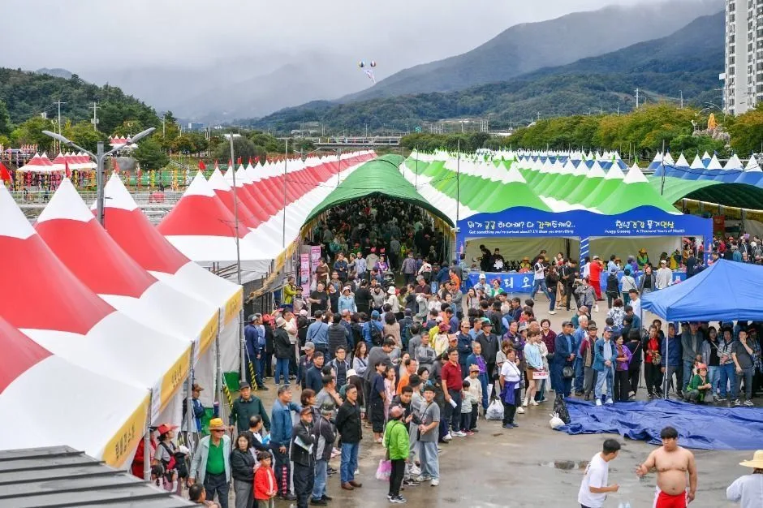
▲ 남원천변에 판매·체험 천막이 이어지는 축제장. 사진은 과거 축제 현장이다. 사진=한국관광공사
| 날짜 | 주요 프로그램 |
|---|---|
| 10월 3일(토) | 개삼터 고유제, 주세붕 군수 행차 재현 퍼레이드, 개막식, 장한별·성리 축하공연 |
| 10월 4일(일) | 오세득 셰프 "풍기 기운 한입" 15:00, 윤윤서 공연(일부 매체) |
| 10월 5일(월) | MBN "전국 스타탄생" 공개 녹화, 강문경 공연(보도) |
| 10월 6일(화) | 설하윤 공연(일부 매체 라인업, 공식 확인은 못함) |
| 3~5일 | KTX-이음 풍기역 임시 정차 |
| 9~11일 | KTX-이음 풍기역 임시 정차 |
| 10월 10일 | 소백산 영주풍기인삼 가요제, 태진아 축하공연 |
| 10월 11일 | 김용빈·길려원 폐막 축하공연 |
| 기간 중 | 인삼깎기 경연, 인절미 떡메치기, 족욕, 덴동어미 화전놀이(8~10일), 풍물공연 |
인삼 판매는 5대 인삼시장 연계로 이뤄지고 세척·택배 서비스를 제공한다. 보도에 따르면 판매 수삼은 사전에 채굴 계획을 제출하고 현장에서 수량을 확인하는 절차를 거친다. 축제장에서 3만원 이상 구매하면 5대 인삼시장에서 쓸 할인쿠폰 추첨 기회가 주어진다(쿠폰 금액 2만~3만 4천원으로 보도). 관람은 무료이고 일부 체험만 유료라는 보도가 있으나 공식 누리집에는 기재가 없고, 체험별 요금은 확인하지 못했다.
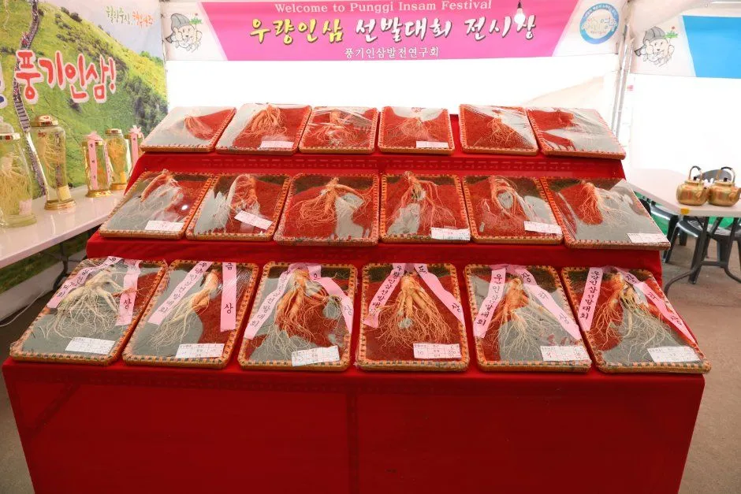
▲ 축제 홍보 사진으로 올라온 포장 인삼 진열대. 올해 판매 구성과 가격은 현장에서 확인해야 한다. 사진=한국관광공사
풍기인삼시장(내비 기준 풍기읍 인삼로 8)은 축제장과 이어진 상권이다. 보도에 따르면 축제장과 토종시장, 인삼시장, 홍삼센터, 선비골인삼시장 등을 약 20분 간격으로 잇는 25인승 시장 순환 셔틀이 있다. 이 셔틀도 3~5일, 9~11일만 다니는 것으로 보도됐다.
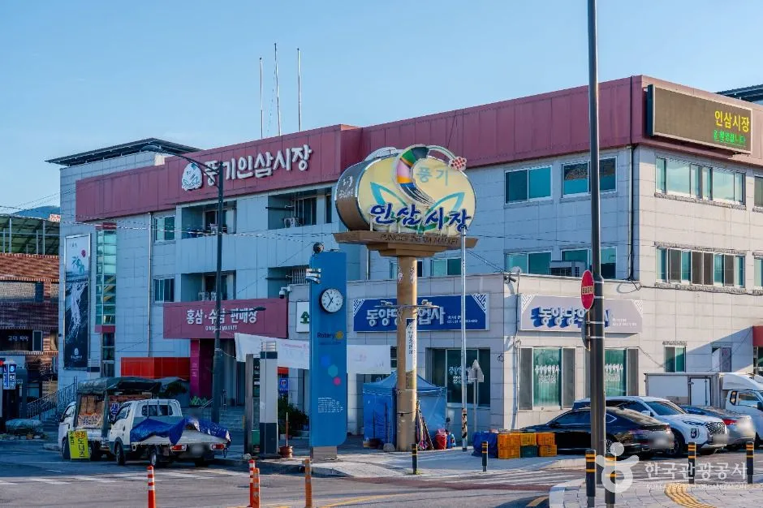
▲ 풍기인삼시장 입구. 건물과 간판이 눈에 띄어 내비로 찾기 쉽다. 사진은 과거 촬영본이다. 사진=한국관광공사
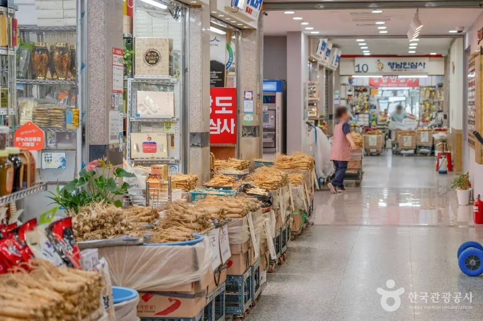
▲ 시장 안 통로. 상점마다 수삼·건삼 가격이 다르므로 한 바퀴 둘러본 뒤 사는 편이 낫다. 사진은 과거 촬영본이다. 사진=한국관광공사
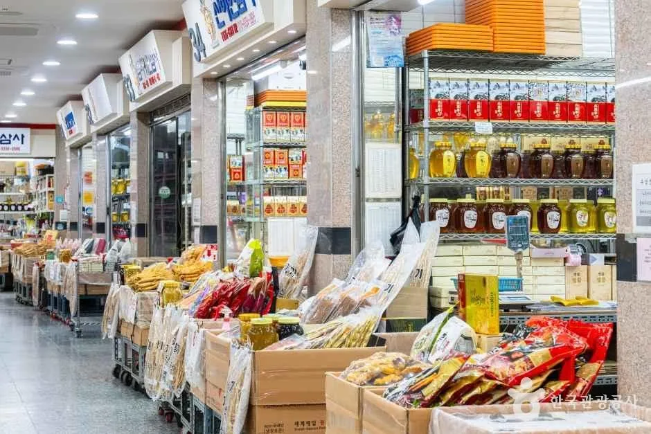
▲ 홍삼 제품과 인삼 가공품이 쌓인 상점가. 세척·택배 서비스는 상점별로 확인한다. 사진은 과거 촬영본이다. 사진=한국관광공사
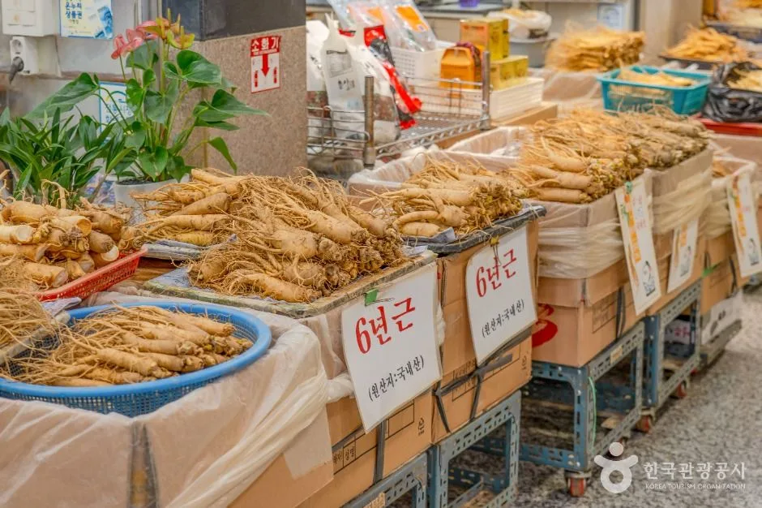
▲ 풍기인삼시장의 수삼 매대. 사진은 과거 촬영본이며 올해 가격은 현장에서 확인해야 한다. 사진=한국관광공사
5. 풍기 주차·교통 — 400대, 5곳
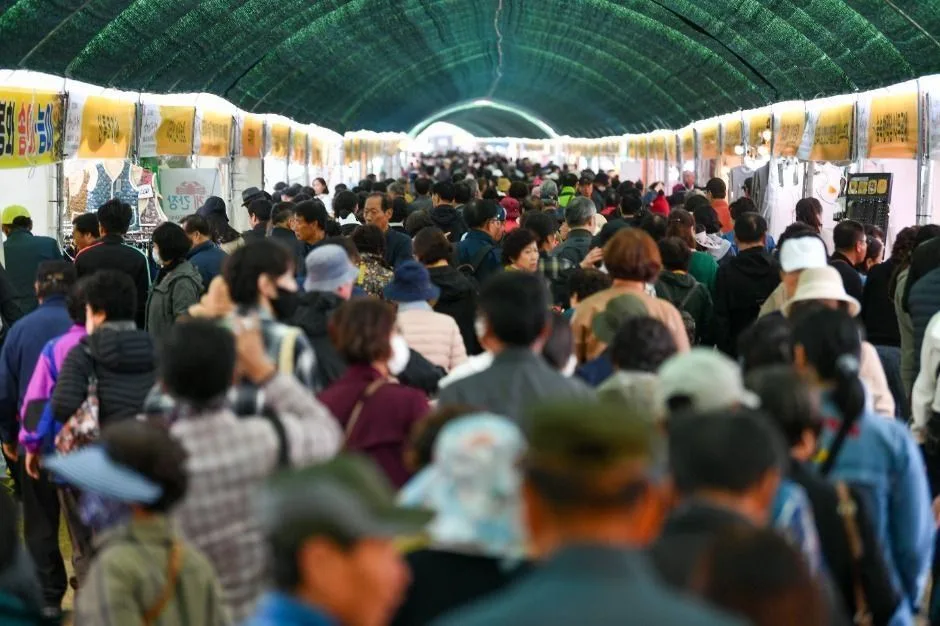
▲ 인파가 몰린 축제장 통로(과거 촬영). 인파가 몰리는 시간대에는 주차장 진입부터 정체될 수 있다. 사진=한국관광공사
보도된 교통 안내에 따르면 주차는 남원천 주차장 2곳, 축제 임시주차장, 풍기인삼공원 주차장, 토종인삼시장 주차장 등 행사장 주변 중소형차 구역 5곳, 총 약 400대 규모다. 400대는 9일짜리 축제 개막 주말 인파를 감당하기에 넉넉한 숫자가 아니다. 대형버스는 동양대학교 잔디광장 주차장과 동양대 평생교육원 주차장으로 안내되며 각각 약 40대 수용이다. 영주역, 종합버스터미널, 풍기역, 축제장을 잇는 무료 순환 셔틀(45인승, 약 30분 간격 보도)과 축제장~인삼시장 순환버스(25인승, 약 20분 간격 보도)도 운영된다. 다만 이 셔틀은 3~5일과 9~11일에만 다니고 6~8일에는 운행하지 않는다는 보도가 있다. 개막 주말인 3~4일은 운행일이므로 걱정이 없지만, 평일에 대중교통으로 오는 일행에게는 따로 알려 주어야 한다. 풍기역 2번 출구에는 웰컴존이 마련된다.
| 구분 | 내용 |
|---|---|
| 중소형 주차 | 남원천 주차장 2곳, 축제 임시주차장, 풍기인삼공원 주차장, 토종인삼시장 주차장(5곳, 약 400대) |
| 대형버스 | 동양대 잔디광장 주차장·평생교육원 주차장(각 약 40대) |
| 순환 셔틀 | 영주역·종합버스터미널·풍기역·축제장, 3~5일·9~11일 운행(6~8일 미운행), 약 30분 간격(보도) |
| 시장 순환버스 | 축제장~5대 인삼시장(토종시장·인삼시장·홍삼센터·선비골인삼시장 등), 약 20분 간격(보도), 운행일은 순환 셔틀과 동일 |
| 풍기역 웰컴존 | 풍기역 2번 출구 앞, KTX-이음 임시 정차일(3~5일, 9~11일) |
| 관람료 | 무료, 일부 체험 유료(보도 기준) |
| 내비 목적지 | 풍기인삼공원 또는 풍기인삼시장(TourAPI: 풍기읍 인삼로 8) |
| 주차 요금 | 확인하지 못함 |
| 교통통제 구간 | 확인하지 못함, 현장 안내 확인 |
6. 두 곳 오가기 — 자차 하루 동선
무섬은 문수면, 풍기는 풍기읍으로 시내를 기준으로 방향이 다르다. 두 곳의 정확한 거리와 소요 시간은 공식 자료에서 확인하지 못했다. 출발 전 내비로 실제 경로를 확인하길 권한다. 보도에서는 두 축제를 연계해 1박 2일 일정으로 묶는 방안이 언급됐다. 하루에 모두 보려면 아래처럼 나누는 방법이 현실적이다.
| 시간대 | 추천 일정 | 이유 |
|---|---|---|
| 오전 | 무섬 도착, 마을 주차 후 걷기와 체험 | 무섬연가(10:30) 전 주차 여유 |
| 10:30 | 무섬연가(외나무다리 전통혼례 재현) | 3일 한정 프로그램 |
| 12:30 | 무섬 개막식(농당고택 주무대) | 3일 한정 프로그램 |
| 오후 | 풍기로 이동, 남원천 일대 주차 | 인삼 쇼핑은 판매 시간 안에 |
| 저녁 | 풍기 시장·먹거리, 인삼 요리 | 인삼한방수육, 인삼비빔밥, 칼국수 등 |
| 대안 | 3일 무섬, 4일 풍기 | 주차 압박 분산, 오세득 셰프 프로그램(4일 15:00) |
| 4일 주의 | 무섬 상여행렬(14:00~16:00)과 풍기 셰프 토크(15:00)가 겹침 | 같은 날 둘 다 보기 어려우니 하나를 고를 것 |
ℹ️ 인삼을 샀다면 차 안 보관
수삼은 온도에 민감하다. 구매 후 바로 이동할 때는 그늘 주차와 보냉백을 챙기거나, 세척·택배 서비스를 이용해 짐을 줄이는 편이 낫다.
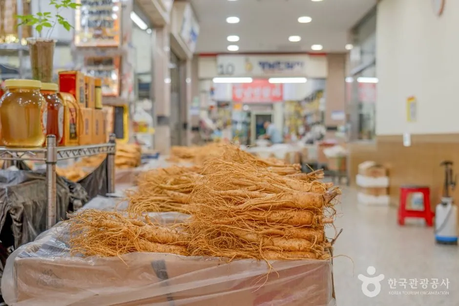
▲ 잔뿌리까지 달린 수삼. 흙이 묻은 채 포장된 경우가 많아 차 안에서는 따로 담아 두는 편이 낫다. 사진은 과거 촬영본이다. 사진=한국관광공사
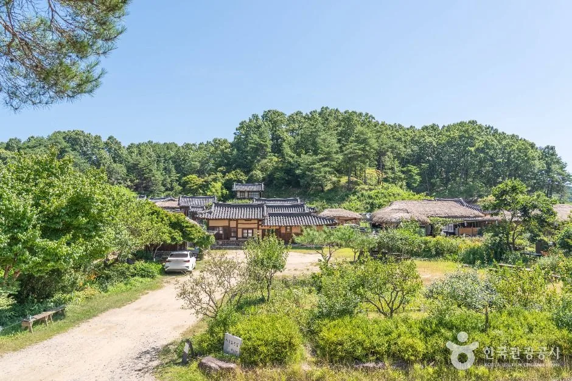
▲ 마을 전경. 축제 일정이 끝나면 한적한 산책 코스로도 좋다. 사진=한국관광공사
7. 시간대·날씨 대비 — 언제 가서 어디에 서나
두 축제의 운영 시간이 다르다. 보도 기준 무섬은 10:00~18:00, 풍기는 10:00~20:00이다. 무섬을 먼저 보고 저녁 시간대에 풍기로 넘어가는 순서가 자연스럽다. 무섬 마을과 모래밭, 풍기 남원천변 모두 야외 행사라 날씨 영향을 받지만, 우천 시 프로그램 변경이나 취소 기준은 확인하지 못했다. 출발 당일 재단 누리집과 문의 전화를 확인하자.
| 시간 | 무섬 | 풍기 |
|---|---|---|
| 3일 오전 | 10:30 무섬연가, 주차 선점 필요(추정) | 개삼터 고유제·퍼레이드(세부 시각 미확인) |
| 3일 낮 | 12:30 개막식 | 개막식·성리·장한별 공연 |
| 4일 오후 | 14:00~16:00 상여행렬 | 15:00 셰프 토크쇼 |
| 저녁 | 18:00 종료(보도) | 20:00까지(보도) |
- 10월 초에는 아침저녁이 쌀쌀할 수 있으니 얇은 겉옷을 챙기는 편이 낫다(일반적인 날씨 상식).
- 무섬은 모래밭과 흙길이 있어 굽 낮은 신발이 맞다.
- 수삼을 샀다면 직사광선을 피하고, 이동 시간이 길면 택배 서비스를 쓰는 편이 낫다.
8. 연계 코스 — 부석사·소수서원은 기존 기사로
영주에 하루 더 머문다면 부석사와 소수서원이 대표 코스다. 관람 요금과 동선은 영주 부석사·소수서원 코스 가이드에 정리해 두었다. 이번 기사에서는 두 축제에 집중하고, 사찰·서원 부분은 해당 기사를 참고하면 된다.
| 장소 | 주소 |
|---|---|
| 소수서원 | 영주시 순흥면 소백로 2740 |
| 선비촌 | 영주시 순흥면 소백로 2796 |
| 부석사 | 영주시 부석면 부석사로 345 |
인삼 축제를 다른 곳과 비교해 보고 싶다면 금산 인삼축제 하루 코스와 파주 개성인삼축제 가이드도 참고할 만하다.
✅ 출발 전 체크리스트
· 무섬 10/3~4(3일 무섬연가 10:30, 개막식 12:30), 풍기 10/3~11(9일간)
· 무섬 내비: 무섬마을(무섬로234번길 31-12), 주차장 제1~4 순차 운영(보도)
· 풍기: 중소형 5곳 약 400대, 대형버스는 동양대, 요금은 미확인
· 풍기 셔틀: 영주역·터미널·풍기역·축제장, 3~5일·9~11일만 운행(6~8일 미운행), KTX-이음 3~5일 임시 정차
· 문의: 무섬 054-630-8725, 풍기 054-630-8706
· 무섬 주차·셔틀 시간표는 영주문화관광재단에 확인
9. 요약
무섬외나무다리축제는 10월 3~4일, 풍기인삼축제는 10월 3~11일(9일간)이며 3~5일은 KTX-이음 풍기역 임시 정차 기간이다. 무섬은 3일 12:30 개막식과 외나무다리 전통혼례 재현, 4일 상여행렬이 중심이고, 풍기는 개삼터 고유제와 행차 퍼레이드, 인삼 판매·먹거리가 중심이다.
자차 방문 시 풍기는 중소형 주차 5곳 약 400대로 여유가 크지 않으니 일찍 도착하거나 셔틀을 이용하고, 무섬은 외나무다리 입구 무료 주차장과 순환 셔틀(보도 기준)을 쓰되 운행 시간은 재단에 확인하자. 풍기 무료 순환 셔틀은 3~5일과 9~11일에만 운행한다. 풍기 관람은 무료(일부 체험 유료)로 보도됐으나, 주차 요금, 무섬 입장료와 체험 요금, 교통통제 구간, 두 곳 사이 소요 시간, 일부 프로그램 시간표는 확인하지 못했다.